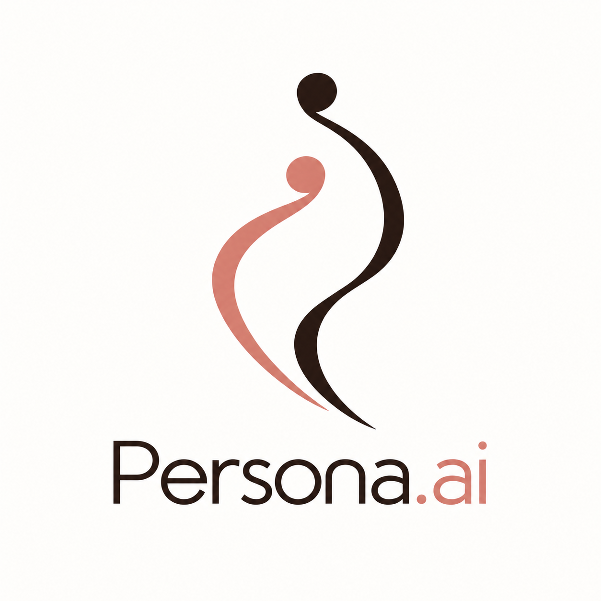
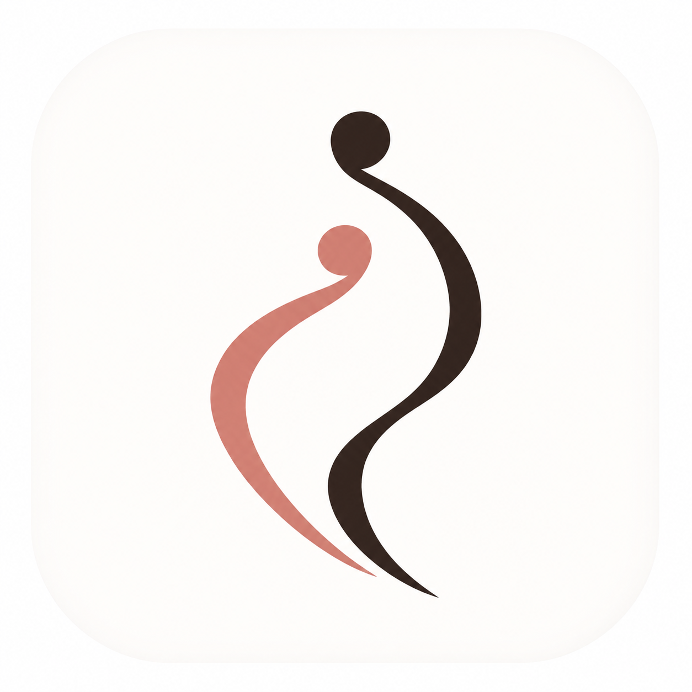
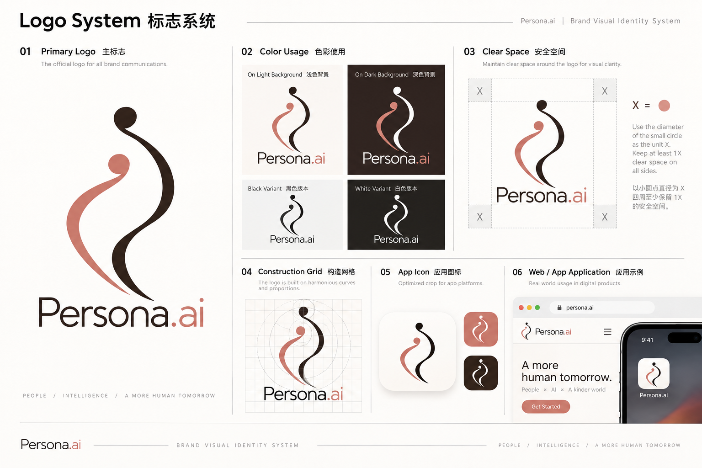
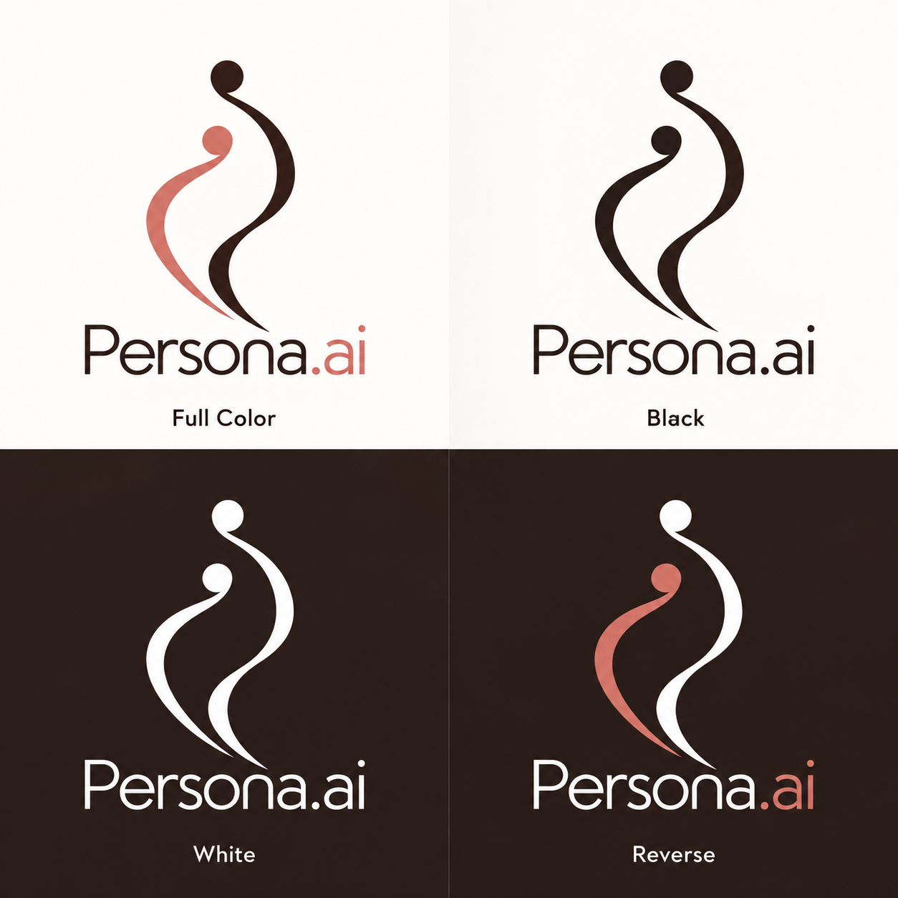
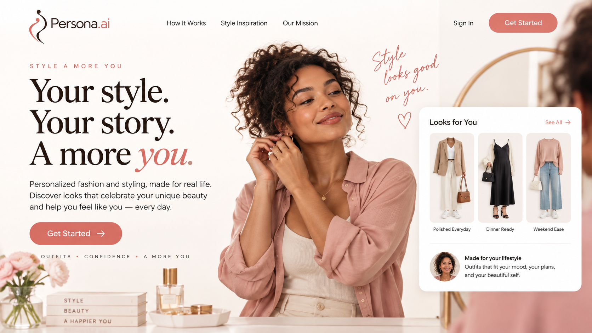
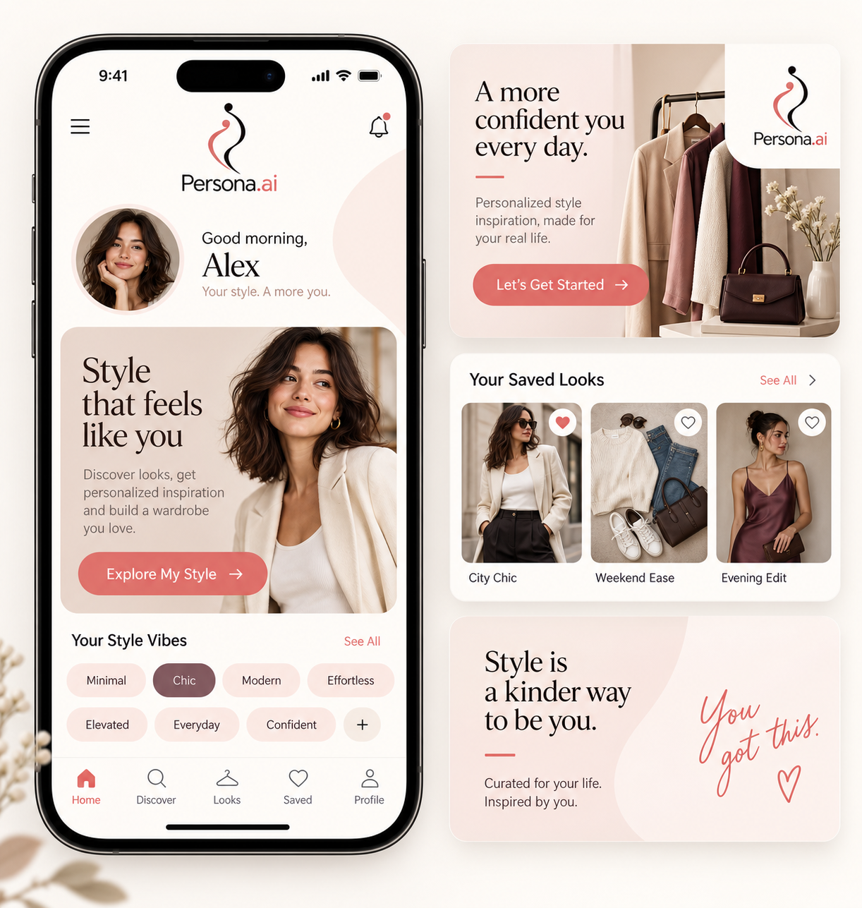
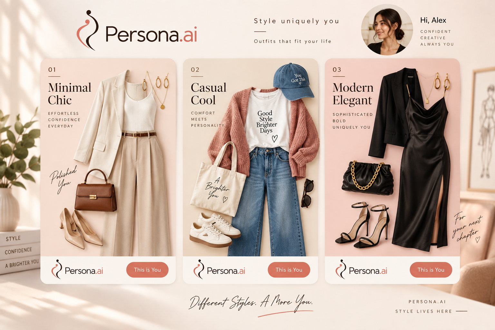
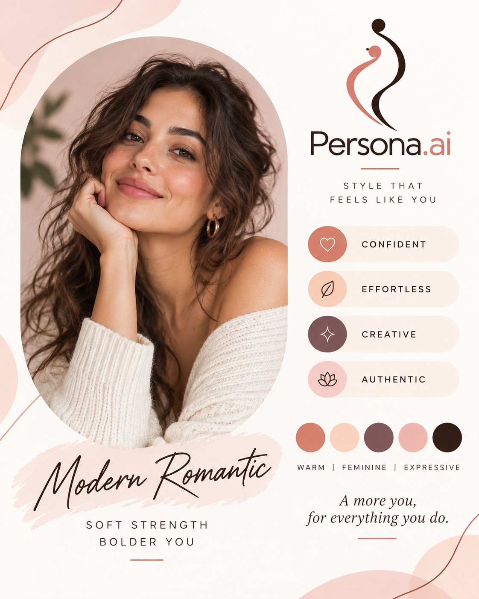
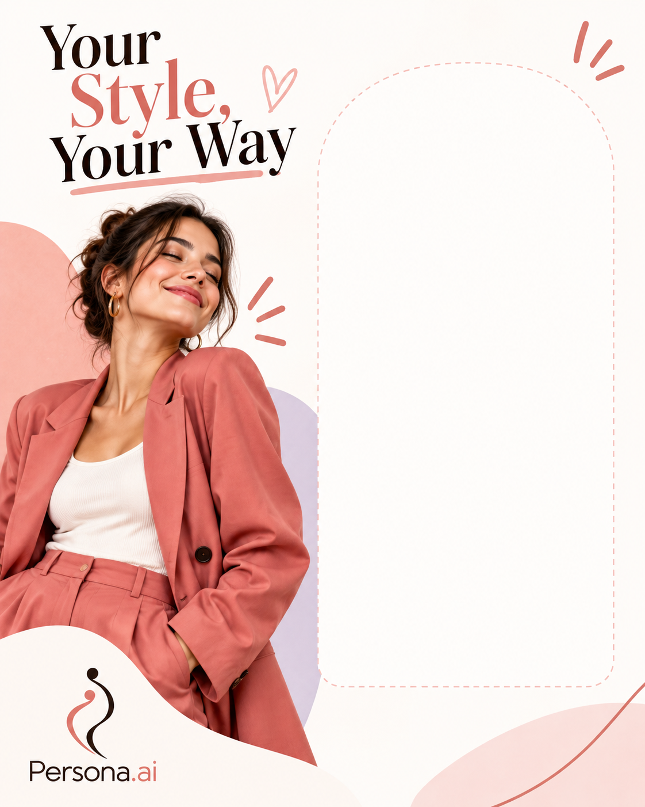
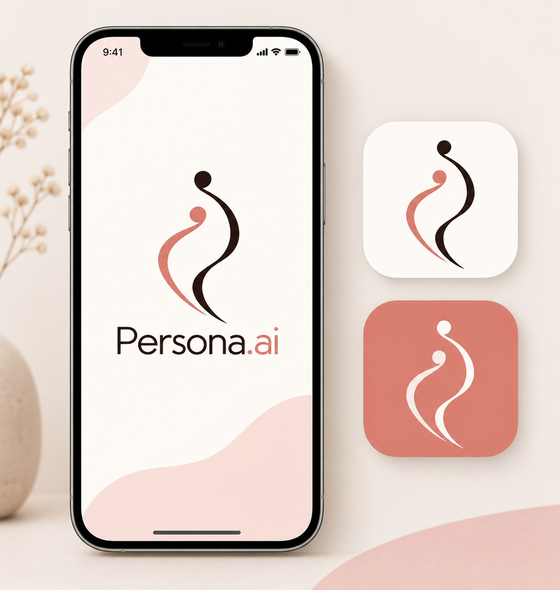

Persona.ai
Style that feels like you.
以 AI 理解个体，以风格表达自我。
Version 1.0 · 2026 · Digital-first identity system

Brand Overview
品牌概述
Persona.ai 用个性化技术帮助每个人找到适合自己的装扮与表达方式。品牌不强调机器，而强调被理解、被看见，以及更像自己的美。
Personal style companion
面向大众个人用户的个性化穿搭与审美体验。
Warm · Young · Expressive
亲和、青春、女性化，但不甜腻、不幼稚。
Encouraging, never prescriptive
鼓励用户探索风格，不替用户定义美。
Logo Identity
标志系统
两条相互映照的曲线代表人与自我之间的理解，也代表每个人不同但彼此呼应的风格。圆点让抽象曲线拥有温度与人格。

Logo Rules
使用规范
Logo 需要呼吸感。保持图形与字标的完整比例，不压缩、不拉伸、不改变两条曲线的相对位置。


Minimum size
网页完整 Logo 建议不小于 120px 宽；App 图标建议不小于 24px。
Background
优先使用暖白、浅 blush 或深棕黑背景，保证对比度。
Do not
不要添加阴影、渐变、描边、旋转、变形或额外图形。
Color System
色彩系统
以温暖的中性色作为基础，用珊瑚色表达活力与个性，用梅紫和 blush 增加层次。
#2B1B16
#D9796D
#F7E5DF
#765B63
#FBF8F5
Recommended ratio
Copy tokens
Typography
字体系统
标题使用有编辑感的衬线字体，正文使用清晰的无衬线字体。两者形成“审美表达 + 亲和产品”的平衡。
Your story.
建议：Fraunces / Playfair Display / Georgia
用于品牌标题、风格结果和重要宣言。
建议：Inter / DM Sans / system sans
用于导航、按钮、卡片信息和说明文字。
Graphic Language
图形语言
辅助图形从 Logo 的曲线延展而来：使用不闭合的弧线、柔和的圆角和轻微的不对称，表达“每个人都有自己的版本”。
Open curves
优先使用开放曲线，不使用封闭的科技环或复杂网格。
Soft surfaces
卡片可使用 blush、暖白和轻柔圆角，避免硬朗工业感。
Personal details
允许少量手写式线条或个性标签，但保持内容清晰。
Icon System
图标系统
图标采用圆角、轻线宽和简单轮廓。功能图标应先保证理解，再表达品牌性格。
Grid
24×24 基础网格，2px 视觉线宽，圆角端点。
States
默认 warm black；激活使用 Persona Coral；禁用使用 muted neutral。
Examples
Profile、Looks、Saved、Discover 等图标保持同一轮廓语言。
Image Direction
图像风格
人物与服饰影像应真实、温暖、有生活感。重点不是展示“完美模特”，而是让用户看见自己可以成为的样子。
Light
自然窗光、柔和阴影、暖白背景。
Subject
多元、年轻、自然、自信的个人状态。
Styling
有差异的风格组合，避免单一“标准美”。
Layout System
版式系统
页面以留白和清晰层级建立信任。品牌图形负责情绪，产品信息负责行动。
Spacing
Hierarchy
一个页面只保留一个主要行动。标题使用衬线字体建立情绪，说明文字用无衬线保持效率，珊瑚色只用于强调。
Digital Product
数字产品规范
Persona.ai 的数字体验应像一个懂你的风格伙伴：轻松、清楚、鼓励探索。


CTA
按钮采用珊瑚色实心样式，文字直接而鼓励，例如 “Explore My Style”。
Cards
卡片使用暖白底、柔和圆角和充足内边距，图片优先于装饰。
Dark mode
深棕黑作为背景，Logo 和核心文字使用白色，珊瑚色保留为行动色。
Motion System
动效系统
动效应像线条自然展开，而不是科技界面闪烁。保持柔和、短促和可预期。
Logo reveal
两条曲线从相反方向缓慢出现，在圆点处完成停留。建议 700–900ms。
Interaction
按钮轻微上移 2px，卡片轻微抬升；避免弹跳和过度缩放。
Accessibility
支持 reduced motion；不依赖动效传递核心信息。
Applications
品牌应用
这些应用图展示 Logo 如何进入真实的产品、推荐、个人画像和社交分享场景。



